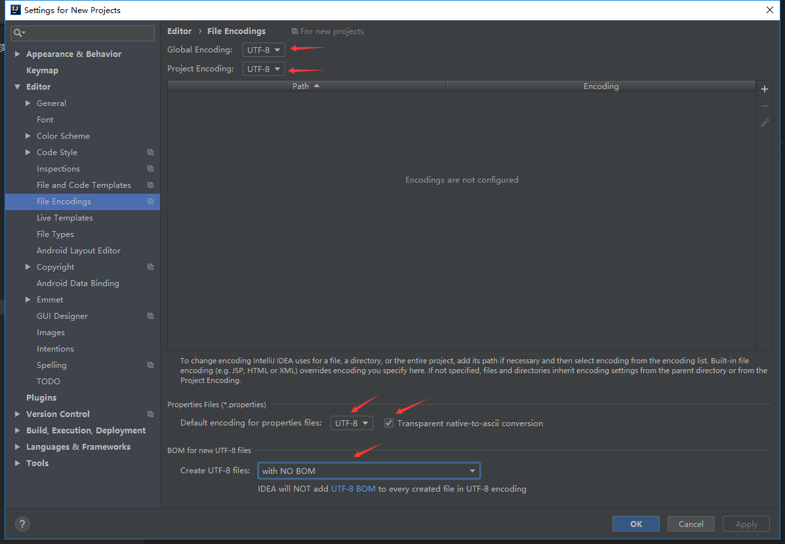
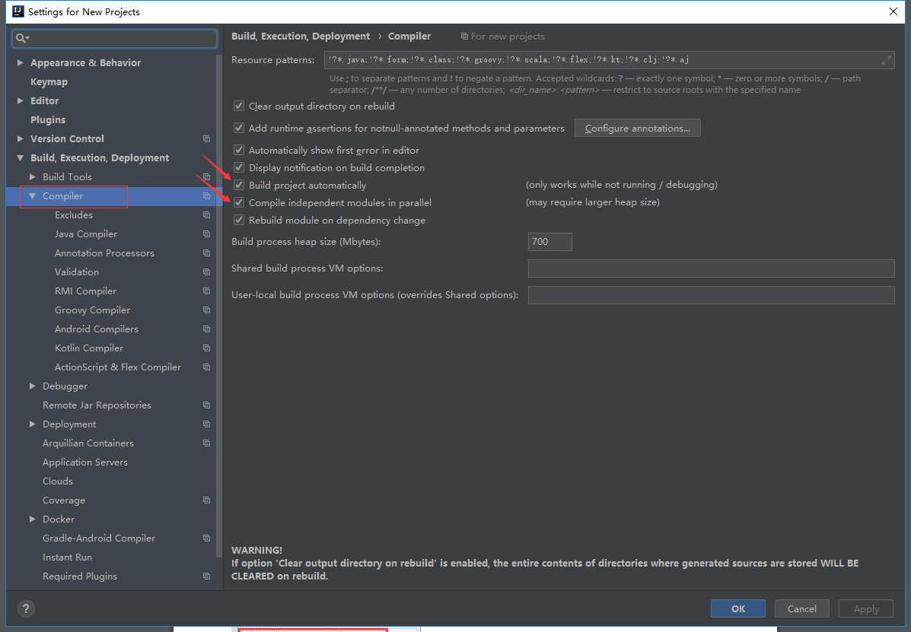
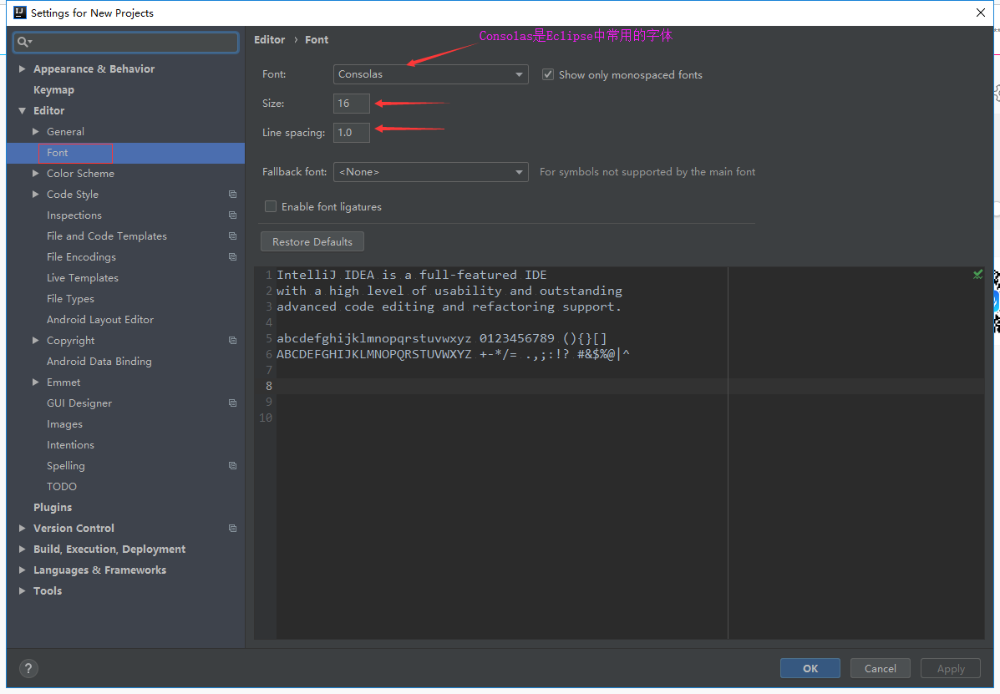
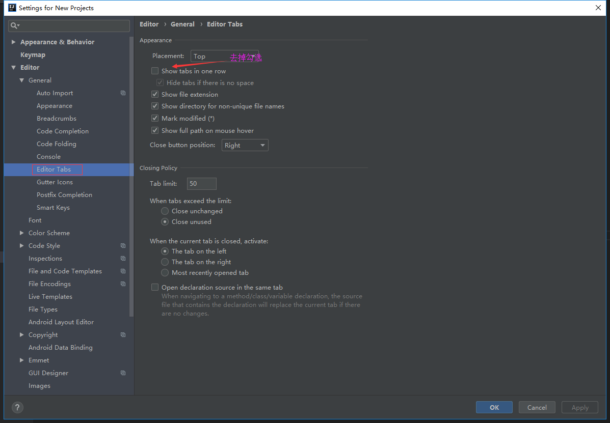
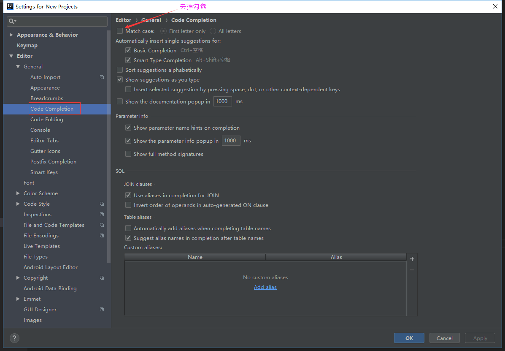
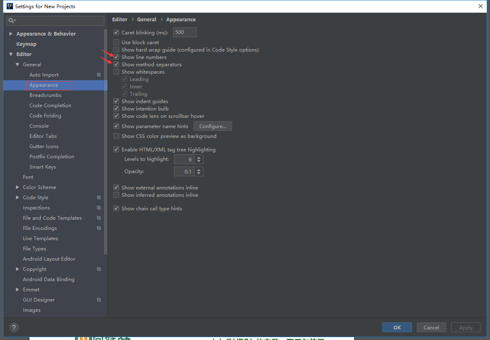
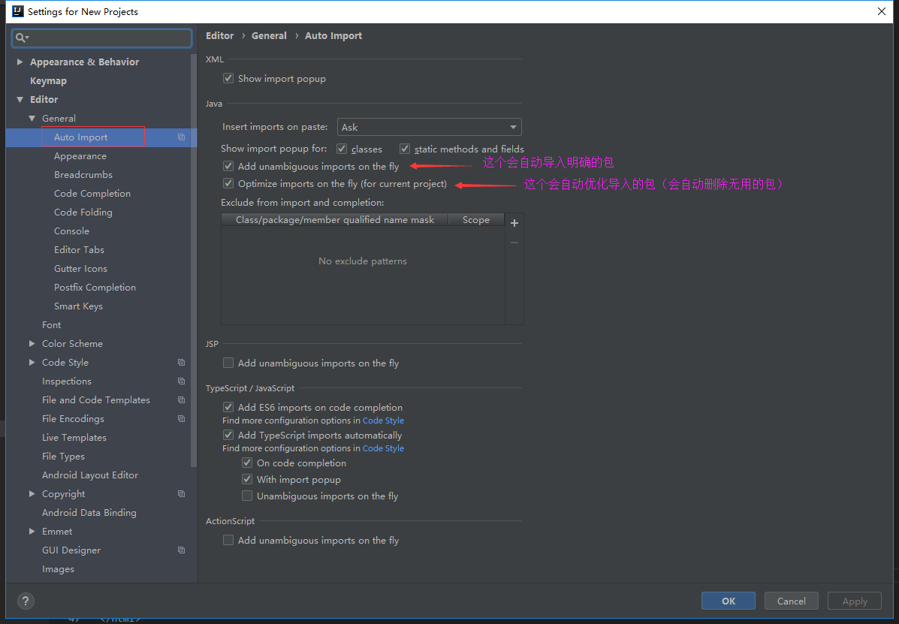
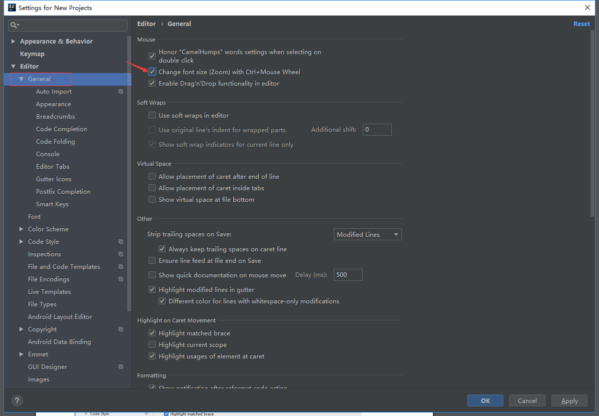
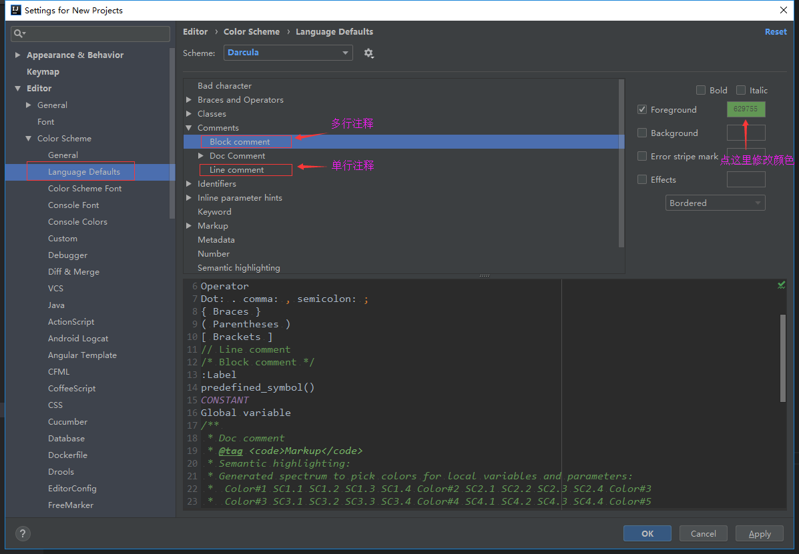

设置编码：Settings->Editor->File Encodings

设置自动编译：Settings->Build,Execution,Deployment->Compiler

修改字体、字体大小、字体行间距：Settings->Editor->Font

配置tab可以多行显示：Settings->Editor->General->Editor Tabs

配置代码提示不区分大小写：Settings->Editor->General->Code Completion

显示行号和方法间的分隔符：Settings->Editor->General->Appearance

自动导包：Settings->Editor->General->Auto Import

ctrl + 鼠标滚轮可以修改字体大小：Settings->Editor->General

修改注释的字体颜色：Settings->Editor->Color Scheme->Comments
